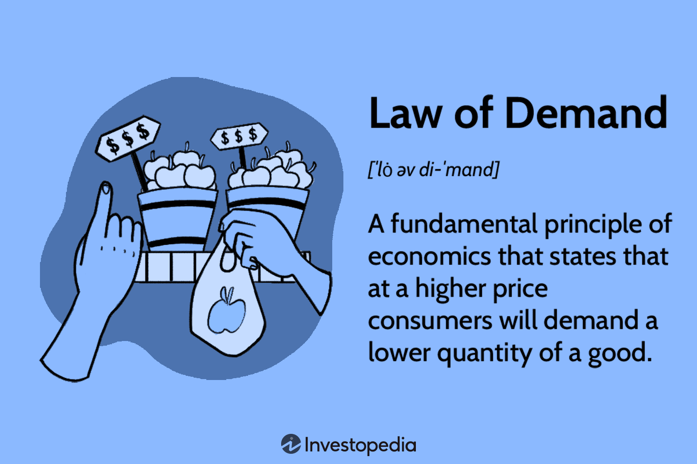
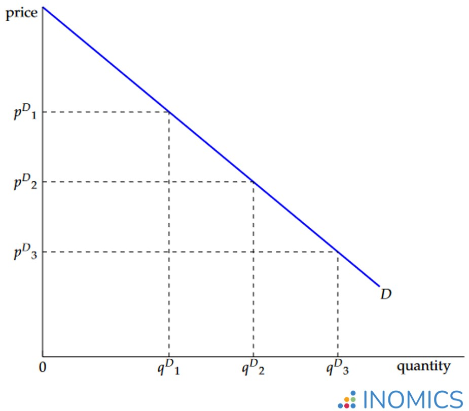

Lesson 1 - Demand
- Demand
- Dami ng produkto o serbisyo na gusto at kayang bilhin ng mga mamimili sa isang takdang presyo at partikular na panahon
- Kaugnayan ng presyo sa demand ng tao:
- Ang presyo ang pinakamahalagang nagtatakda (determinant) sa dami ng produkto
- Batas ng Demand
- Kapag mataas ang presyo, mababa ang dami ng gusto at kayang bilhin, at kapag bumaba ang presyo, tataas ang dami ng gusto at kayang bilhin (ceteris paribus)

- Ceteris Paribus
- Presyo lamang ang salik na nakakaapekto sa pagbabago ng quantity demanded, habang ang ibang salik ay hindi nagbabago o nakakaapekto nito.
- Independent Variable: Presyo - Dependent variable: QD
- Presyo ^ QD v
- Presyo v QD ^
- 2 konseptong nagpapaliwanag kung bakit may magkasalungat o inverse na ugnayan sa pagitan ng presyo at quantity demanded
- Substitution effect - kapag tumaas ang presyo, maghahanap ng pamalit na mas mura
- Income effect - mas malaki ang halaga ng kinikita kapag mas mababa ang presyo
- Demand = kagustuhan + kakayahan
- Demand Schedule
- - Isang tsart na nagpapakita ng bilang ng kalakal na hinihiling sa mga tiyak na presyo
- - Talahanayan/talaan
- - 3 sections
-
- Demand Function
- - Matematikong paglalahad sa ugnayan ng presyo at QD sa pamamagitan ng formula
- - Qd = a-bP
- - Qd = f(p)
- - (a = intercept, b = slope)
- Demand Curve
- - Grapikong representasyon ng batas ng demand
- - Negatibong relasyon ng presyo at produkto
- - Linya (tuwid/kurba)

- Salik na nakakaapekto sa demand
- - Kita ng mga mamimili
- - Populasyon / Dami ng mamimili
- - Panlasa
- - Presyo ng magkaugnay na produkto sa pag konsumo (complementary at substitute products) normal goods - kadalasang binibili
- - Inaasahan ng nga mamimili sa hinaharap
- - Okasyon
- - Klima/panahon
< back to the AP home page